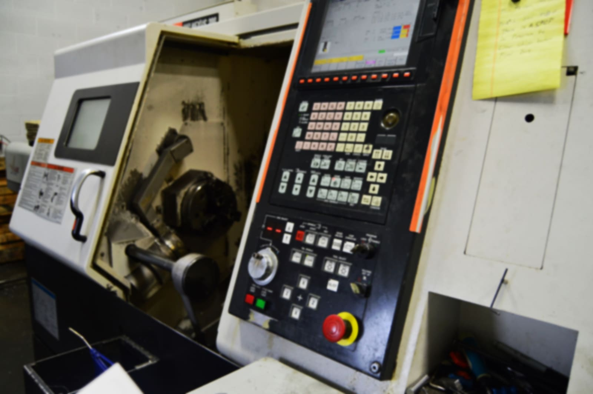
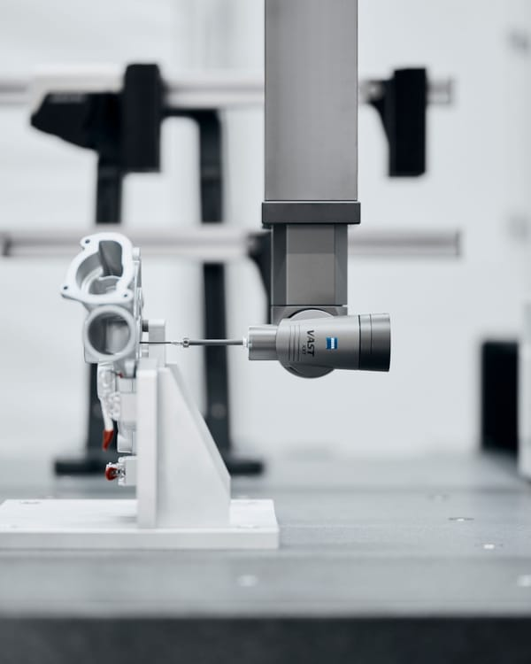
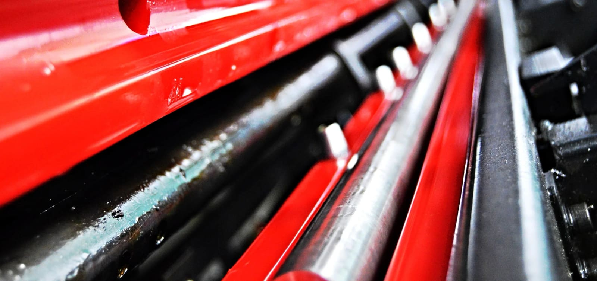
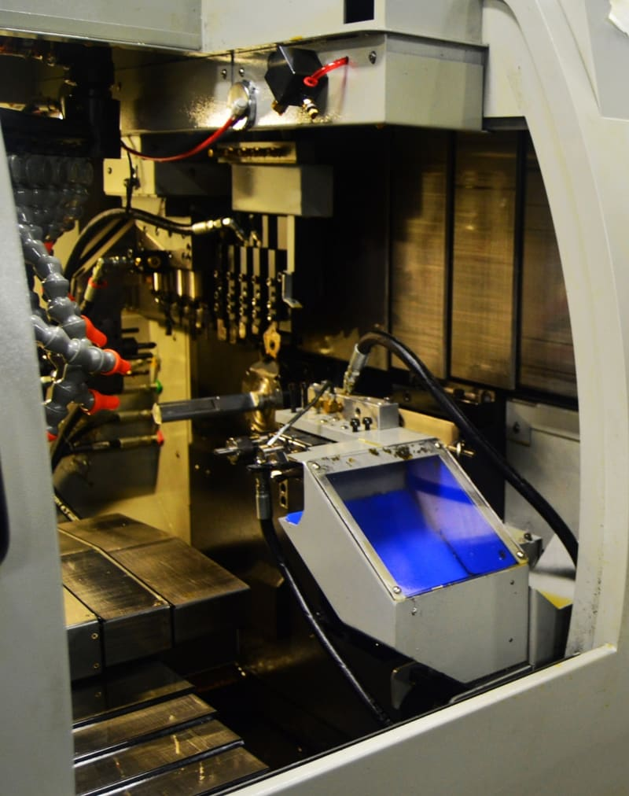
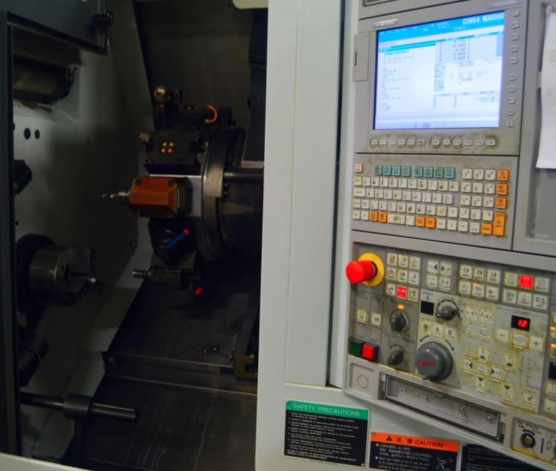
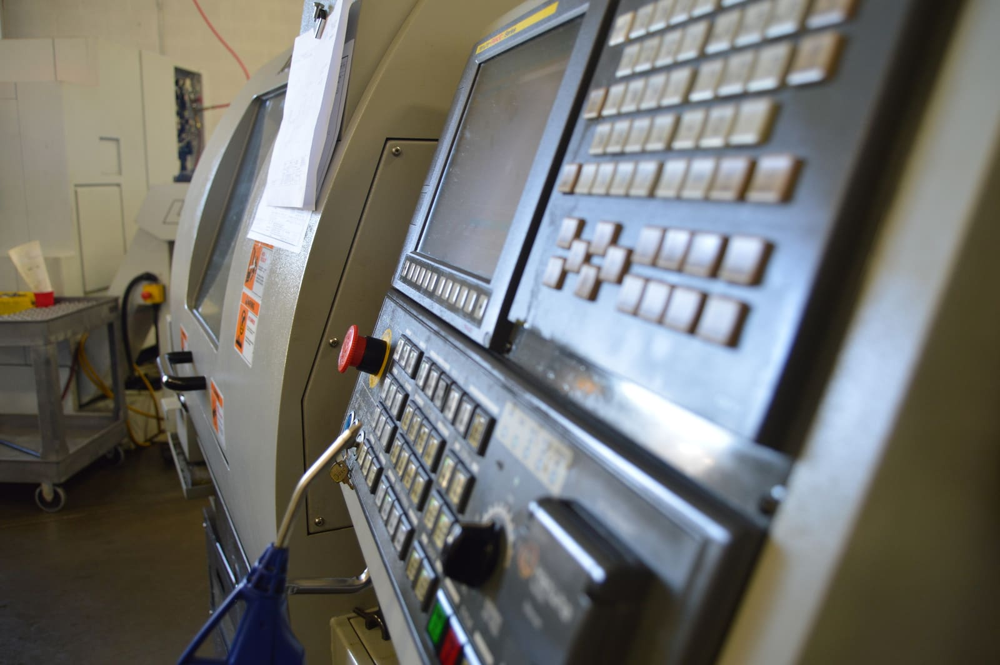

Precision CNC machining · Idaho Falls, Idaho
Precision parts.
Repeatable
results.
BK Machine turns, mills, and finishes tight-tolerance components, from first-article prototypes to long-run production, all under one roof.
- Years in business
- 30+
- CNC machines on the floor
- 30+
- Core processes in-house
- 6
- Prototype to production
- 1 shop
Capabilities
Complete parts, in as few setups as possible.
Every handoff between machines is a chance for error. Our equipment is chosen to finish parts complete, which keeps features related to each other, costs predictable, and lead times short.
-
01
Swiss-Type Turning
Sliding-headstock turning with guide-bushing support holds long, slender parts true along their full length. Synchronized main and sub spindles, both with C-axis and live tooling, cross-drill, mill flats, and back-work features so parts come off the machine finished. Round, hex, and profiled bar are all welcome.
Ø3–32 mm bar · Main + sub spindle · Live tooling
-
02
Multi-Tasking Turning
Turn-mill centers with Y-axis, live tooling, and sub-spindle transfer handle off-center milling, cross holes, and secondary operations in a single setup. That means no re-chucking error and no handling between operations.
Y-axis · Sub-spindle transfer · Bar-fed production
-
03
High-Speed Precision Milling
High-RPM, rapid tool-change machining centers built for small, feature-dense components. Light, fast toolpaths hold fine detail and surface finish, high-pressure through-tool coolant clears chips from deep features, and 4th/5th-axis indexing reaches multiple faces in one clamping.
24,000 RPM · BT30 · 4th/5th-axis indexing
-
04
Production Drilling & Tapping
Dedicated drill/tap centers run high-volume hole-making with rigid tapping and fast tool-to-tool times. They're ideal for part families and repeat orders where every second of cycle time counts.
15,000 RPM · Rigid tapping · 21-tool magazines
-
05
Vertical & Horizontal Machining
Rigid CAT40 platforms take on larger prismatic parts and heavier stock removal, and 4-axis horizontal machining works multiple faces per cycle for better feature-to-feature accuracy across the part.
CAT40 · 30-tool capacity · 4-axis horizontal
-
06
Wire EDM
Wire EDM cuts without contact or cutting force, so it handles hardened and difficult materials. It produces sharp internal corners, fine slots, and tight-tolerance profiles that rotating tools can't reach.
0.25 mm wire · Hardened materials · Burr-free profiles

Done-in-one
Raw bar in. Finished part out.
Our turning cells pair bar feeders with sub-spindle part transfer, so the back side of a part is machined in the same cycle as the front. Concentricity holds, secondary operations disappear, and the parts in the box match the first article.
- Front and back features machined in a single cycle
- Bar-fed for consistent, unattended production runs
- Collaborative robots tend select machines, extending runs past the shift
Quality & control
Measured in the machine, not after the fact.
Problems are cheapest to catch before the part leaves the fixture. Measurement and process control are built into how we run, then verified on our ZEISS CMM.
-
In-process probing
Spindle probes locate datums, verify setups, and measure critical features in the machine, so offsets are corrected before the next part is cut.
-
Automated tool setting
Laser and contact tool setters measure tool length and catch broken tools between operations, which protects both the part and the schedule.
-
Repeatable workholding
Self-centering pneumatic vises, dovetail fixturing, and precision rotary tables hold part position consistent from the first part to the last.
-
Connected shop floor
Networked program transfer keeps revisions under control, and MTConnect machine monitoring shows us what every spindle is doing.
CMM metrology New
Certainty, measured in microns.
Our ZEISS SPECTRUM bridge CMM brings lab-grade dimensional inspection in-house. A granite table, air bearings, and thermally stable glass-ceramic scales give traceable, repeatable results, and ZEISS CALYPSO inspects parts directly against your CAD model and GD&T callouts.
- System
- ZEISS SPECTRUM 776
- Measuring volume
- 700 × 700 × 600 mm
- Length accuracy
- Up to 1.8 + L/250 µm
- Software
- ZEISS CALYPSO
- First-article inspection reports measured against your print
- Full GD&T evaluation: position, profile, flatness, runout, and more
- CAD-to-part comparison and production sampling with trend data
- Reverse engineering of legacy parts without drawings

Images: ZEISS
How we work
From drawing to delivery.
-
01
Quote & review
Send a drawing or 3D model. We review it for manufacturability and flag anything that drives up cost before you commit.
-
02
Plan & program
We match each part to the right machine, then build CAM toolpaths and fixturing around proven tooling.
-
03
First article
The first part is measured on our ZEISS CMM and checked against the print before the run begins. No surprises at quantity.
-
04
Production
Bar-fed, probed, and monitored, so part 500 matches part 1. Material is cut to size in-house to keep jobs moving.
-
05
Inspect & ship
CMM-verified final inspection, careful packaging, and on-time delivery to your dock.



About BK Machine
Three decades of craft, in Idaho Falls.
For over 30 years, BK Machine has made precision components for commercial customers across the region. We started as a small job shop and grew into a production operation with more than thirty CNC machines, but we still answer the phone and still treat every print like it matters.
We're licensed, bonded, and insured. Our goal is simple: parts that are right, on time, every time.

Contact
Let's talk about your parts.
Send a drawing, a model, or just a question. We'll get back to you within one business day.
- Shop
-
1050 Hollipark Dr.
Idaho Falls, ID 83401 Get directions - Phone
- (208) 516-1970
- jeff@bkmachine.net
- Hours
-
Monday – Friday, 8:00 am – 5:00 pm
Closed Saturday & Sunday